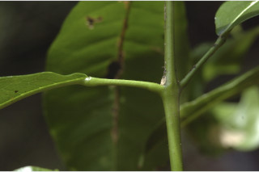
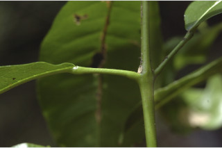

Evergreen trees up to 10 m tall.
10 ಮೀ. ಎತ್ತರದವರೆಗಿನ ಸದಾಪರ್ಣಿ ಮರಗಳು.
Evergreen trees up to 10 m tall.
பசுமைமாறாமரம் 10 மீ. உயரம் வரை வளரக்கூடியது.
Bark greyish, smooth; blaze red.
ತೊಗಟೆ ಬೂದು ಬಣ್ಣ ಹೊಂದಿದ್ದು ನಯವಾಗಿರುತ್ತದೆ;ಕಚ್ಚು ಮಾಡಿದ ಜಾಗ ಕೆಂಪು.
Bark greyish, smooth; blaze red.
மரத்தின் பட்டை சாம்பல் நிறமானது, வழுவழுப்பானது; உள்பட்டை சிவப்பு நிறமானது.
Branchlets stout, terete, glabrous.
ಕಿರುಕೊಂಬೆಗಳು ದೃಢ ಹಾಗೂ ದುಂಡಾಗಿರುತ್ತವೆ ಮತ್ತು ರೋಮರಹಿತವಾಗಿರುತ್ತವೆ.
Branchlets stout, terete, glabrous.
சிறிய நுனிக்கிளைகள் தடித்தவை, குறுக்குவெட்டுத் தோற்றத்தில் வளையமானது, உரோமங்களற்றது.
Leaves simple, opposite or subopposite, decussate; petiole 1.5-3.3 cm long, canaliculate, glabrous, articulate, swollen at both ends; lamina 7-17 x 3.5-7.5 cm, elliptic, apex bluntly acuminate and curved back or sometimes obtuse to retuse, base cuneate-acute, margin entire, coriaceous or subcoriaceous, glabrous; midrib slightly raised above; secondary_nerves 7-10 pairs; tertiary_nerves broadly reticulate.
ಎಲೆಗಳು ಸರಳವಾಗಿದ್ದು ಅಭಿಮುಖಿ ಅಥವಾ ಉಪ-ಅಭಿಮುಖಿಗಳಾಗಿರುತ್ತವೆ, ಕತ್ತರಿಯಾಕಾರದ ಅಭಿಮುಖ ಜೋಡನಾ ವ್ಯವಸ್ಥೆಯಲ್ಲಿರುತ್ತವೆ;ತೊಟ್ಟು 1.5 – 3.3 ಸೆಂ.ಮೀ.ವರೆಗಿನ ಉದ್ದವಿದ್ದು, ಕಾಲುವೆಗೆರೆ ಸಮೇತವಿದ್ದು ರೋಮರಹಿತವಾಗಿರುತ್ತವೆ, ಗಿಣ್ಣುಗಳ ಸಮೇತವಿರುತ್ತವೆ;ಪತ್ರಗಳು 7-17 X 3.5 –7.5 ಸೆಂ.ಮೀ. ಗಾತ್ರ ಹೊಂದಿದ್ದು, ಅಂಡವೃತ್ತದ ಆಕಾರ,ಮೊಂಡಾಗ್ರವುಳ್ಳ ಕ್ರಮೇಣ ಚೂಪಾಗುವ ತುದಿ ಹೊಂದಿರುತ್ತವೆ ಮತ್ತು ಹಿಂಭಾಗದ ಕಡೆಗೆ ಬಾಗಿರುತ್ತವೆ, ಕೆಲವು ವೇಳೆ ಚೂಪಲ್ಲದ ಅಥವಾ ಮೊಂಡಾದ ತುದಿಯಲ್ಲಿ ಕಚ್ಚುಳ್ಳ ಅಗ್ರವನ್ನು ಹೊಂದಿದ ತುದಿ, ಬೆಣೆ-ಚೂಪಾದ ಬುಡ, ನಯವಾದ ಅಂಚು ಹೊಂದಿದ್ದು ತೊಗಲು ಅಥವಾ ಉಪ-ತೊಗಲನ್ನೋಲುವ ಮೇಲ್ಮೈ ಹೊಂದಿದ್ದು ರೋಮರಹಿತವಾಗಿರುತ್ತವೆ; ಮಧ್ಯನಾಳ ಪತ್ರದ ಮೇಲ್ಭಾಗದಲ್ಲಿ ಸ್ವಲ್ಪ ಮಟ್ಟಿಗೆ ಉಬ್ಬಿರುತ್ತವೆ ; ಎರಡನೇ ದರ್ಜೆಯ ನಾಳಗಳು 7-10 ಜೋಡಿಗಳಿರುತ್ತವೆ; ಮೂರನೇ ದರ್ಜೆಯ ನಾಳಗಳು ವಿಶಾಲ ಜಾಲಬಂಧ ನಾಳ ವಿನ್ಯಾಸದಲ್ಲಿರುತ್ತವೆ.
Leaves simple, opposite or subopposite, decussate; petiole 1.5-3.3 cm long, canaliculate, glabrous, articulate, swollen at both ends; lamina 7-17 x 3.5-7.5 cm, elliptic, apex bluntly acuminate and curved back or sometimes obtuse to retuse, base cuneate-acute, margin entire, coriaceous or subcoriaceous, glabrous; midrib slightly raised above; secondary_nerves 7-10 pairs; tertiary_nerves broadly reticulate.
இலைகள் தனித்தவை, எதிரடுக்கமானவை அல்லது கிட்டதட்ட எதிரடுக்கமானவை, குறுக்குமறுக்கானவை
Inflorescence axillary corymbose cymes; flowers yellowish white; pedicel ca. 1 cm long.
ಪುಷ್ಪಮಂಜರಿಗಳು ಅಕ್ಷಾಕಂಕುಳಿನಲ್ಲಿನ ನೀಳಛತ್ರ ಮಧ್ಯಾರಂಭಿ ಮಾದರಿಯವು;ಹೂಗಳು ಹಳದಿ ಮಿಶ್ರಿತ ಬಿಳಿ ಬಣ್ಣದವು;ತೊಟ್ಟುಗಳು ಅಂದಾಜು 1 ಸೆಂ.ಮೀ. ಉದ್ದವಿರುತ್ತವೆ.
Inflorescence axillary corymbose cymes; flowers yellowish white; pedicel ca. 1 cm long.
இலைகள் தனித்தவை, எதிரடுக்கமானவை அல்லது கிட்டதட்ட எதிரடுக்கமானவை, குறுக்குமறுக்கானவை; இலைக்காம்பு 1.5-3.3 செ.மீ. நீளமானது, குறுக்குவெட்டுத் தோற்றத்தில் கேனாலிகுலேட், உரோமங்களற்றது, இணைந்தவை, காம்பின் இருமுனைகளும் உப்பியது; இலை அலகு 7-17 X 3.5-7.5 செ.மீ., நீள்வட்ட வடிவானது, அலகின் நுனி அதிக்கூரியதுடன் அதன் முனை மழுங்கியது மற்றும் முனை மடிந்தவை அல்லது சிலசமயங்களில் மெட்டையானது முதல் சிறு பிளவுடையது (ரெட்யூஸ்), அலகின் தளம் ஆப்பு வடிவானது-கூரியது, அலகின் விளிம்பு முழுமையானது, கோரியேசியஸ் அல்லது சப்கோரியேசியஸ், உரோமங்களற்றது; மையநரம்பு மேற்புறத்தில் அலகின் பரப்பைவிட சிறிது உயர்ந்து இருக்கும்; இரண்டாம் நிலை நரம்புகள் 7-10 ஜோடிகள்; மூன்றாம் நிலை நரம்புகள் அகன்ற வலைப்பின்னல் போன்றவை.
Drupe, 4-celled, subglobose, usually broader than long, slightly grooved, 0.8 x 1.2 cm; seed one per cell.
ಡ್ರೂಪ್ಗಳು 4-ಕೋಶಗಳನ್ನೊಳಗೊಂಡಿದ್ದು ಸಾಮಾನ್ಯವಾಗಿ ಉದ್ದಕ್ಕಿಂತ ಅಗಲವಾಗಿರುತ್ತವೆ,ಉಪಗೋಳಾಕಾರದಲ್ಲಿದ್ದು, ಸ್ವಲ್ಪಮಟ್ಟಿಗೆ ತೋಡುಗುರುತುಗಳನ್ನು ಹೊಂದಿರುತ್ತವೆ ಹಾಗೂ 0.8X1.2 ಸೆಂ.ಮೀ.ಉದ್ದವನ್ನು ಹೊಂದಿರುತ್ತವೆ; ಬೀಜಗಳ ಸಂಖ್ಯೆ ಒಂದು.
Drupe, 4-celled, subglobose, usually broader than long, slightly grooved, 0.8 x 1.2 cm; seed one per cell.
மஞ்சரி இலைக்கோணங்களில் காணப்படுபவை, கோரியம்போஸ் சைம் வகை மஞ்சரி; மலர்கள் மஞ்சள் நிறமானது வெள்ளை நிறமானது; மலர்காம்பு 1 செ.மீ. நீளமானது.

 
